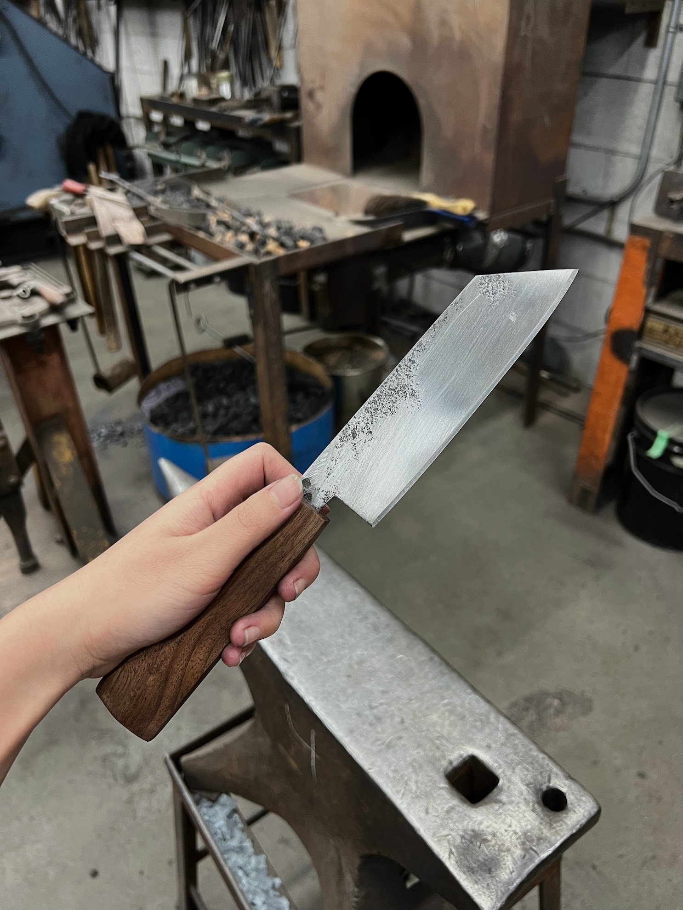
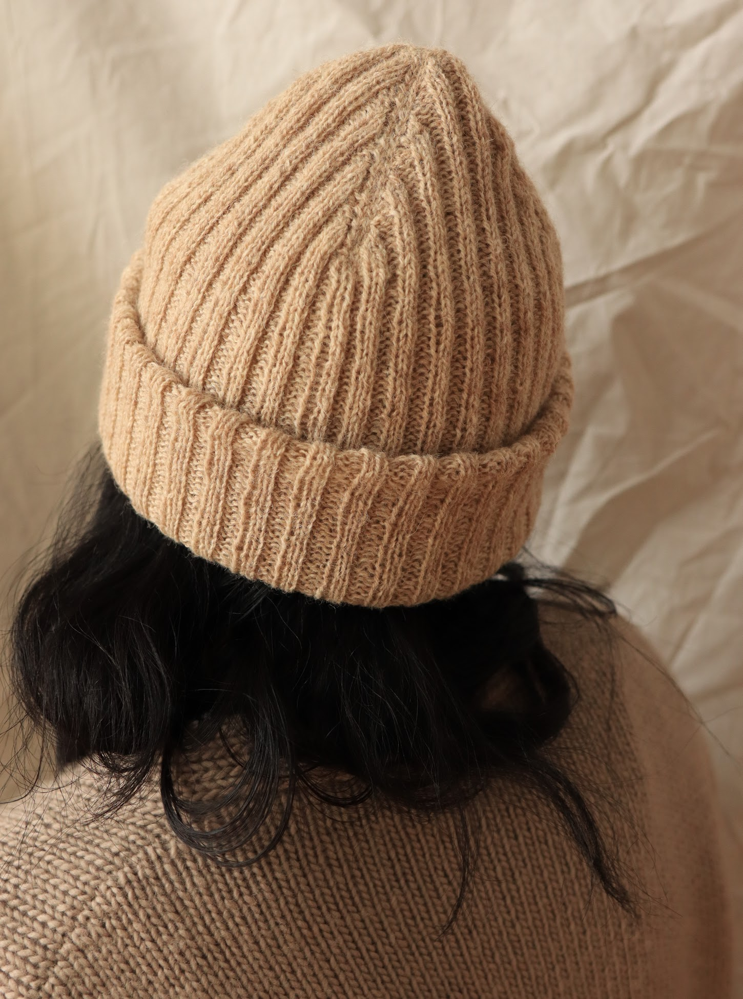

Pattern: The Oatmeal Hat
A double layered winter hat knitting pattern. Soft and fluffy. Pattern for sale, created by myself and edited by Pamela Hurd.
Learn More

A double layered winter hat knitting pattern. Soft and fluffy. Pattern for sale, created by myself and edited by Pamela Hurd.
Learn More